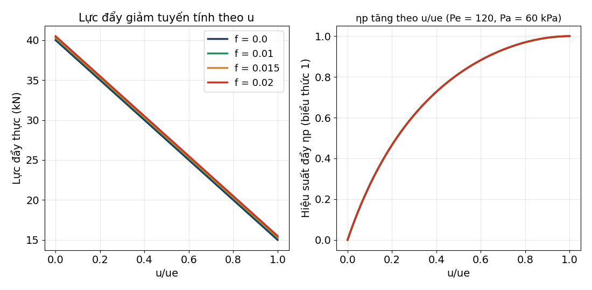

01. Giới thiệu, nguyên lý đẩy và phân loại động cơ
Từ bốn lực của máy bay đến cây phân loại động cơ: nguyên lý tác dụng – phản lực, các họ động cơ phản lực và hiệu suất của chúng.
CLO: CLO1Thời lượng (ước tính): ≈ 6.5 giờ lý thuyết44 slideCâu hỏi: 120 (29 gốc)
Slide Ch.1 tr.5–48 · Cengel Ch.1–2 (background: review of AE1.030); Cengel §9-11 Ideal Jet-Propulsion Cycles (ref) · El-Sayed Ch.1 History and Classifications of Aeroengines, Ch.2 Performance Parameters of Jet Engines · Farokhi Ch.3 Engine Thrust and Performance Parameters (core); Ch.1 Introduction (ref, history) · Bản đồ nội dung sách
- Viết và giải thích bốn lực khi bay bằng đều, tính lực đẩy cần thiết từ CD/CL và khối lượng.
- Giải thích nguyên lý đẩy bằng phản lực và vì sao cánh quạt (nhiều khí, tăng tốc ít) có hiệu suất đẩy cao hơn phản lực thuần.
- Phân loại động cơ hàng không vũ trụ và mô tả turbojet, turbofan, turboprop, turboshaft, ramjet, pulsejet, scramjet, turboramjet, turborocket; phân biệt phản lực trực tiếp và gián tiếp.
- Tính lực đẩy thực, hiệu suất đẩy, nhiệt, tổng, TSFC, xung riêng và tầm bay cho các bài của El-Sayed Ch.2 và Farokhi Ch.3.
- Dùng khí quyển chuẩn ISA và kiểm số liệu slide tr.48 (264 hPa tại 10 km chứ không phải 11 km).
📷 Slide gốc của giảng viên (bấm để phóng to)
 Ch.1·5
Ch.1·5 Ch.1·6
Ch.1·6 Ch.1·7
Ch.1·7 Ch.1·8
Ch.1·8 Ch.1·9
Ch.1·9 Ch.1·10
Ch.1·10 Ch.1·11
Ch.1·11 Ch.1·12
Ch.1·12 Ch.1·13
Ch.1·13 Ch.1·14
Ch.1·14 Ch.1·15
Ch.1·15 Ch.1·16
Ch.1·16 Ch.1·17
Ch.1·17 Ch.1·18
Ch.1·18 Ch.1·19
Ch.1·19 Ch.1·20
Ch.1·20 Ch.1·21
Ch.1·21 Ch.1·22
Ch.1·22 Ch.1·23
Ch.1·23 Ch.1·24
Ch.1·24 Ch.1·25
Ch.1·25 Ch.1·26
Ch.1·26 Ch.1·27
Ch.1·27 Ch.1·28
Ch.1·28 Ch.1·29
Ch.1·29 Ch.1·30
Ch.1·30 Ch.1·31
Ch.1·31 Ch.1·32
Ch.1·32 Ch.1·33
Ch.1·33 Ch.1·34
Ch.1·34 Ch.1·35
Ch.1·35 Ch.1·36
Ch.1·36 Ch.1·37
Ch.1·37 Ch.1·38
Ch.1·38 Ch.1·39
Ch.1·39 Ch.1·40
Ch.1·40 Ch.1·41
Ch.1·41 Ch.1·42
Ch.1·42 Ch.1·43
Ch.1·43 Ch.1·44
Ch.1·44 Ch.1·45
Ch.1·45 Ch.1·46
Ch.1·46 Ch.1·47
Ch.1·47 Ch.1·48
Ch.1·48Bài giảng
Ghi chú chi tiết
1. Nội dung chi tiết, ánh xạ slide ↔ sách
| Slide Ch.1 | Nội dung | El-Sayed | Farokhi | Cengel (ôn) |
|---|---|---|---|---|
| 1–4 | bìa, tài liệu tham khảo + chuẩn đầu ra, tên chương, mục lục (xác nhận bằng ảnh: không có nội dung học thuật; thuộc ngoài phạm vi m01) | — | — | — |
| 5–6 | bốn lực, Fz, Fx, P = mg | §2.2 (tr.76) | Ch.3 §3.5.5 (Breguet, tr.137–138) | — |
| 7–10 | vai trò động cơ, tác dụng – phản lực, cánh quạt so với phản lực | §2.1–2.2, §2.4.1 | Ch.3 §3.1, §3.5.4 (tr.135–136) | Ch.1–2 (Newton, đơn vị) |
| 11–12 | năng lượng E, nén – cháy – giãn nở | §1.3 | Ch.3 §3.5.3 (ηth) | Ch.2 (năng lượng) |
| 13–16 | phân loại, tên lửa, piston | §1.3 Fig 1.35, §1.7 | Ch.1 §1.1–1.2 | — |
| 17–26 | vì sao phản lực; ramjet, pulsejet, scramjet, turboramjet, turborocket | §1.2, §1.4.1–1.4.5 | Ch.1 §1.3 | — |
| 27–42 | họ tuabin khí: turbojet, turboprop, turboshaft, turbofan | §1.5.1–1.5.6 | Ch.1 §1.2; Ch.3 §3.6 | — |
| 43–45 | phản lực trực tiếp/gián tiếp | §1.5.2–1.5.3, §2.4 | Ch.3 §3.5.4 | — |
| 46–47 | gas generator, turbo-air generator, APU | §1.6 (turboshaft công nghiệp) | — | — |
| 48 | phân loại theo ứng dụng: độ cao – vận tốc; ISA | §2.3.4 (ISA) | Appendix A (tr.937–940) | — |
Chỉ ghi các mục tôi đã đọc: trang chữ El-Sayed (OCR/EPUB) và ảnh Appendix A, trang 54 (Problems 1.1–1.5) và các trang Problems 3.x của Farokhi. Không dùng công thức từ text layer của Cengel (m01 chỉ ôn).
2. Năm ví dụ có lời giải đầy đủ (số từ script)
U = 0,8√(1,4·287·223,2) = 239,6 m/s. ṁc = 5/6·125 = 104,2 kg/s; ṁh = 20,8 kg/s; f = 0,75/20,8 = 0,036. Tquạt = 0,75·24 = 18 kN ⇒ uec = 18 000/104,2 + 239,6 = 412 m/s; Tlõi = 6 kN ⇒ ueh = (6000/20,8 + 239,6)/1,036 = 509 m/s. ΔK̇E = ½[20,8((1+f)ueh² − U²) + 104,2(uec² − U²)] = 8,07 MW. ηp = 24 000·239,6/8 068 258 = 71,3 %; ηth = 8 068 258/(0,75·42,8×10⁶) = 25,13 %; ηo = 17,91 %. Kiểm: F·U/(ṁfQHV) = 17,91 %.
V0 = 2√(1,4·287·223,15) = 598,9 m/s; Dram = 25·598,9 = 14,97 kN; Fg = 25,75·1050 = 27,04 kN; Fn = 12,07 kN; TSFC = 0,75/12 066 = 0,2238 kg/(h·N); ΔK̇E = ½(25,75·1050² − 25·598,9²) = 9,712 MW ⇒ ηth = 30,25 %, ηp = FnV0/ΔK̇E = 74,40 %, ηo = 22,51 %.
ṁa = 200 kg/s, ṁf = 6 kg/s, u = 280 m/s, ue = 600 m/s, Pe = 30 kPa, Te = 750 K, Pa = 26,5 kPa. ρe = 30 000/(287·750) = 0,1394 kg/m³ ⇒ Ae = 206/(0,1394·600) = 2,463 m². T = 200(1,03·600 − 280) + 3500·2,463 = 67 600 + 8 622 = 76 222 N; T/ṁa = 381,1 N·s/kg; ηp = 0,669; ηth = 0,125; ηo = 0,0835; TSFC = 78,7 mg/(N·s); Mae = 1,12 (γ = 4/3).
℘s = FpropV0/ηprop = 5000·150/0,75 = 1000 kW; V9 = 1000/5 = 200 m/s; ΔK̇E = ½·5·(200² − 150²) = 43,75 kW (4,4 % của ℘s); F = 5000 + (1000 − 5·150) = 5250 N ⇒ ηp = 5250·150/(1 000 000 + 43 750) = 0,7545 (gần đúng F·V0/℘s = 0,7875).
S = ηoQR/g·(L/D)·ln(m1/m2) = 0,35·45×10⁶/9,8·17·ln(1/0,673) = 10 820 km. Nhiên liệu cho chặng bay: (1 − 0,673)·385 560 = 126 078 kg. ISA 11 km: T = 216,65 K, p = 226,3 hPa, a = 295,0 m/s; Ma 0,85 ⇒ u = 250,8 m/s.

3. Bối cảnh lý thuyết và lịch sử
Theo El-Sayed §1.2, năm 1939 động cơ phản lực mới chỉ là vật thử nghiệm phòng thí nghiệm; đến 1945 rõ ràng tương lai hàng không thuộc về phản lực. Frank Whittle nộp bằng sáng chế turbojet tháng 1/1930 (cấp 1932); W.1 (lực đẩy thiết kế 1240 lb) bay trên Gloster E28/39 ngày 15/5/1941. Hans von Ohain được cấp bằng 1936; máy bay Heinkel He 178 chạy He S-3 bay chuyến đầu 27/8/1939. Messerschmitt Me 262 (Jumo 004B, mỗi động cơ 1980 lb) là máy bay phản lực sản xuất hàng loạt đầu tiên, bay lần đầu 18/7/1942. Slide tr.17 chỉ nói "dawn of the jet engine was in the 1940s". Hai cách nhìn về lực đẩy: cánh quạt và phản lực đều áp dụng định luật 3 Newton, khác nhau ở lưu lượng khối lượng và gia tốc cấp cho khí. Chương 2 sẽ dùng chu trình Brayton để tính vận tốc phụt mà ở đây ta coi là cho trước.
4. Ứng dụng trên tàu bay
Từ slide: ATR 72-500 (Vietnam Airlines) và Piaggio P-180 dùng turboprop; Airbus A350 dùng Rolls-Royce Trent XWB (ba trục) và họ A320 dùng CFM56 (hai trục); Concorde dùng Olympus 593 turbojet có bộ đốt sau; SR-71 Blackbird (Ma 3) là ví dụ turboramjet; BrahMos là tên lửa hành trình dùng ramjet; X-43A là máy bay thử scramjet. Từ El-Sayed: Boeing 747 dùng 4 động cơ CF6 (Ví dụ 2.7: mỗi động cơ 24 kN ở 10 km, Ma 0,8). Từ Farokhi (Problem 3.1–3.4): J57, JT3D-3B, JT8D, JT9D là các động cơ thương mại/quân sự thực; JT9D cất cánh 43 500 lbf khớp lực đẩy tính 43 464 lbf từ số liệu El-Sayed Problem 2.12.
5. Bẫy khi thi
- Phân loại: tuabin khí nằm trong nhánh phản lực của động cơ hút khí; turboprop/turboshaft là gián tiếp, turbojet/ramjet/tên lửa là trực tiếp.
- Trent XWB là 3 trục, CFM56 là 2 trục (dễ đảo ngược).
- Số liệu slide tr.48: 264 hPa ứng với 10 km, 226,3 hPa ứng với 11 km.
- Hiệu suất đẩy cao thì lực đẩy trên mỗi kg khí thấp: không có "động cơ vừa nhanh vừa hiệu quả nhất" cho mọi tốc độ.
- Chỉ dùng công thức 2u/(u + ue) khi Pe = Pa và f ≈ 0; luôn đổi sang m/s và N.
- Đề thi dạng khái niệm của giảng viên sẽ bám sát slide: chú ý nhãn hình (Inlet M > 1, Nozzle M = 1 của ramjet; "1 spool = 1 cụm máy nén–tuabin"; BPR = dòng rẽ nhánh/dòng lõi).
Tự kiểm tra nhanh (10 câu, ưu tiên câu gốc)
Luyện sâu
Mở ngân hàng câu hỏi của module (120 + 24)
Notebook Jupyter
Tải notebook (đã chạy sẵn, có đầu ra thật):
Lỗi và nghi vấn của nguồn
- Slide Ch.1 tr.1–4 và tr.49: đã xem ảnh. Tr.1 = bìa (logo USTH, A350-1000, tiêu đề "Thermal System", logo đối tác), tr.2 = tài liệu tham khảo [1] Farokhi, [2] Cengel, [3] El-Sayed và bốn chuẩn đầu ra (cấu trúc động cơ, nguyên lý động cơ tuabin, hệ thống chỉ báo động cơ, hệ thống khởi động và đánh lửa), tr.3 = tên chương, tr.4 = mục lục 4 mục; tr.49 = "Thank you for your attention". Đúng như phân đoạn trong modules.py: không có nội dung học thuật nào ngoài tr.5–48. Lưu ý: tr.2 liệt kê "hệ thống chỉ báo động cơ" và "khởi động và đánh lửa" là chuẩn đầu ra nhưng slide Ch.1 không dạy chúng và các tài liệu tham khảo của m01 cũng không có phần tương ứng: ghi vào đây, CHƯA LÀM.
- Slide Ch.1 tr.48: tropopause "~10–11 km" ghi 264 hPa. ISA (tính bằng công thức, đối chiếu tích phân thuỷ tĩnh số): p(10 km) = 264,4 hPa (T = −50,0 °C), p(11 km) = 226,3 hPa (T = −56,5 °C). Bảng Farokhi Appendix A (SI; xem ảnh trang 906 PDF 940) không có hàng 11 km: 10 km = 2,650×10⁴ Pa (223,3 K), 12 km = 1,940×10⁴ Pa (216,6 K); công thức ISA lệch bảng Farokhi 0,24 % ở 10 km, 0,36 % ở 12 km, tối đa 2,1 % ở 30 km. Kết luận: 264 hPa là giá trị của 10 km, −56 °C là của 11 km; slide ghép hai độ cao. Hai mốc còn lại: 26 hPa tại ~25 km (ISA 25,11 hPa) và 3 hPa tại ~40 km (ISA 2,87 hPa; bảng Farokhi 2,871×10² Pa): làm tròn.
- Slide Ch.1 tr.6: "Air density (attitude)" sai chính tả, ý là altitude (độ cao). Khung thứ tư chỉ có ký hiệu T_u, chưa có biểu thức; trong site dùng T_u = F_x = (C_D/C_L)·m·g (suy ra từ F_z = P), ghi rõ là suy ra.
- Slide Ch.1: lỗi chính tả không ảnh hưởng nội dung: tr.14 "chambre", "Nozzel"; tr.28 "Combustion Chambre"; tr.31–32 "Combuction chamber"; tr.33 "Piaggo" (Piaggio); tr.42 "Booste"; tr.2 "Highrr Education".
- Slide Ch.1 tr.25: "world's fastest jet-powered plane: Mach 3": cách nói của slide cho SR-71 (thường ghi Ma 3,2+); không kiểm. El-Sayed §1.4.4 nói turboramjet gồm turbojet đến Ma 3 rồi ramjet; mục §1.5.4 lại xếp J58 của SR-71 trong nhóm turbofan có bộ đốt sau: sách và slide khác nhau về cách phân loại động cơ SR-71 (ghi trong bài giảng, không chọn im lặng).
- Slide Ch.1 tr.40 và tr.42: "Trent XWB (3 spool)", "CFM56 (2 spool)": đúng với El-Sayed §1.5.4 (Rolls-Royce RB211/Trent 3 trục; CFM56 2 trục); câu hỏi bo_sung kiểm lỗi đảo ngược.
- Slide Ch.1 tr.41: giá trị lực đẩy đọc từ biểu đồ chỉ là ước lượng ±3 nghìn lb và slide không ghi hãng; site không dùng số đọc này để ra câu hỏi tính toán. Một động cơ trên hình không có nhãn.
- Slide Ch.1 tr.47: ý nghĩa của W1, W2 trong sơ đồ APU không được slide giải thích; site chỉ chép nhãn, không bịa nghĩa.
- Slide Ch.1: 7 trang chỉ-ảnh/GIF/video (1, 15, 19, 21, 28, 33, 49) và tr.9, 16, 23, 29, 35 chỉ có ảnh động: nội dung site chỉ mô tả đúng cái nhìn thấy (ví dụ tr.23 là khung tiêu đề đen của video "Scramjet Engine Operation", Pratt & Whitney Rocketdyne), không suy diễn thêm. Chữ OCR "98079", "INSEC", "LLLE", "135", "4350" là nhiễu.
- Tr.44: slide xếp turbojet là phản lực TRỰC TIẾP (phần chính của năng lượng là động năng E_c, phần còn lại E_m); slide không xếp turbofan vào loại nào trong tr.43–45: nhận xét về turbofan trong bài là nhận định của site, đánh dấu là vậy.
- El-Sayed Ví dụ 2.4 (tr.83–86): lời giải in có nhiều lỗi chép: dòng buồng đốt chứa "9,423²" vô nghĩa; "T_Turbine = 145×10³×0,31 − 69,4×271 − 236,446" (thiếu số hạng); "4×10³×0,214" lẽ ra 41×10³×0,214; vòi phun in −25 118 ở lời giải và −25 198 ở bảng tổng, trong khi tính đúng ra −25 198 N; ngoài ra phần lớn dòng tính lực của từng bộ phận trong sách chỉ có số cuối, không có phép tính trung gian. Site tính lại từng bộ phận theo F = P_e·A_e − P_i·A_i + ṁ(U_e − U_i) và tổng = 49 304 N = lực đẩy cả động cơ (khớp số in cuối cùng).
- El-Sayed Ví dụ 2.7 (tr.100–101): η_th in 25,46 % và "16,179×10⁶/(2×0,75×42,8×10⁶) = 0,2546"; tính lại cho 0,2520 (25,20 %) với tử số làm tròn của sách và 0,2513 (25,13 %) với vận tốc không làm tròn. η_o in 17,93 % khớp η_p·η_th = 0,712×0,2520 = 0,1794 chứ không khớp 0,712×0,2546 = 0,1813. Site dùng giá trị tính lại; sách in lệch ~1,0 %. Cũng ở đây "ṁ_c = 5/6×125 = 104,2 kg/s" nhưng sau đó ghi đơn vị m/s ở Ví dụ 2.6 ("68,1 m/s" cho lưu lượng); Ví dụ 2.6: η_p thứ hai in "1,7304 = 170,04 %" (hai số khác nhau).
- El-Sayed Ví dụ 2.1 (tr.79–80): "u = 18 910 ± 10³√(357,588 − 134,4)/60": mẫu số/dấu căn viết tắt; nghiệm 564,15 và 66,17 m/s khớp tính lại 564,15 và 66,17.
- El-Sayed Ví dụ 2.10 (tr.109): bảng số liệu có "2,5 kg/s" nhiên liệu nhưng TSFC tính bằng 2,65; diện tích cánh 26,4 m² mà phép tính dùng 66,4; mật độ "650 000 ft" lẽ ra 65 000 ft; site không dùng ví dụ này làm câu hỏi (CHƯA LÀM: dữ liệu mâu thuẫn).
- El-Sayed Ví dụ 2.9 (tr.108): khối lượng cất cánh in 385 560 kg nhưng phép nhân dùng 385 650; không ảnh hưởng đáp án tầm bay 10 819 km (site tính 10 819,6 km với g = 9,8 và ln(1/0,673) chính xác).
- El-Sayed §2.3.4: công thức áp suất ISA in P(bar) = 1,01325 − 0,000112z + 3,8e⁻⁹·z (chữ OCR thiếu số mũ): không dùng; site dùng công thức ISA đầy đủ (T = 288,15 − 0,0065z; p = p0(T/T0)^5,2559) và đối chiếu bảng Farokhi.
- El-Sayed Problem 2.5 (tr.123–124): hai bài gộp thành một đoạn (phần đầu ba công thức η_p và phần sau chứng minh η_o,max, tìm các vận tốc bay, QR, tầm, thời gian, m1, m2, lực đẩy). Site giữ cả hai, gọi "phần đầu"/"phần sau". Ở phần sau đề không nêu rõ lưu lượng nhiên liệu trong chặng bay: site giả thiết ṁf = f·ṁa không đổi và ghi rõ trong lời giải. Cách đặt ra "η_o,max" sau đó "η_o = 0,16" cho hai nghiệm vận tốc đối xứng quanh u = (1+f)ue/2; tầm bay như nhau cho hai nghiệm.
- El-Sayed Problem 2.13: đề yêu cầu m1, m2 nhưng không cho lưu lượng không khí hay nhiên liệu nên không giải được: site chỉ giải câu (1)–(4) (vận tốc bay, QR, tầm cực đại, thời gian). Đề viết "stated in Problem 2.2" nhưng định nghĩa η_o,max nằm ở Problem 2.5/Ví dụ 2.8.
- El-Sayed Problem 2.12: đề cho đơn vị Anh (lbm, ft/s, Btu/lbm); site dùng g_c = 32,174 lbm·ft/(lbf·s²), 1 Btu = 778,169 ft·lbf và bỏ qua khối lượng nhiên liệu trong dòng lõi (4,3 lbm/s trên 247 lbm/s). Lực đẩy tĩnh tính 43 464 lbf khớp lực đẩy cất cánh 43 500 lbf in trong Farokhi Problem 3.4 (JT9D).
- El-Sayed Problem 2.19: số liệu cho ESFC thấp hơn khoảng điển hình 0,45–0,60 lb/(h·hp) mà sách nêu (tr.104): kết quả 0,393 lb/(h·hp) là do số liệu của đề.
- El-Sayed Problem 2.4 (đảo chiều lực đẩy): đề không nêu góc đảo chiều; site giả thiết đảo hoàn toàn 180° và ghi vào nguồn câu hỏi.
- El-Sayed Ch.1 Problems 1.1–1.52: phần lớn là bài mô tả/lịch sử/ghi nhớ (so sánh Flyer I và A380, Leonardo da Vinci, Hero, Wright, danh sách động cơ…), cần hình hoặc tra cứu ngoài sách. Site chỉ dùng như câu tự luận ngắn (goc) các bài trả lời được từ nội dung chương: 1.21, 1.22, 1.23, 1.24, 1.32, 1.47, 1.48. Bỏ: 1.1–1.20, 1.25–1.31, 1.33–1.46, 1.49–1.52 (lịch sử, danh sách chủng loại cần tra thêm, hoặc cần hình P1.42–P1.52 mà bản OCR chỉ có hình không nhãn).
- El-Sayed Ch.2 Problems bỏ: 2.1 (cần hình góc gió), 2.3 (tên lửa nghiêng 30°, đề thiếu hình), 2.6, 2.10, 2.11 ý chứng minh khác (giữ 2.11 như câu chứng minh), 2.7–2.9, 2.14–2.15, 2.24, 2.26–2.27, 2.31 (cần vẽ đồ thị; site có hình 2.7 tự vẽ), 2.16–2.18 (chứng minh dài), 2.20 (trùng 2.2), 2.22 (thiếu dữ kiện: TSFC, L/D cho phép nhiều cách hiểu), 2.23 (số liệu nhiên liệu sinh học bị cắt trong bản OCR), 2.25 (dữ liệu T_eh, T_ec bị lẫn nhãn p_eh/p_ec), 2.28–2.30 (kinematics: giữ 2.28 và 2.29; 2.30 bảng so sánh bị cắt).
- Farokhi Ch.1 Problems: giữ 1.1–1.3 và 1.4, 1.5; Ch.3 Problems: giữ 3.5, 3.6, 3.7(b), 3.8, 3.9(a–d), 3.10, 3.11, 3.13, 3.17(a). Bỏ: 3.1–3.4 (cần đọc số từ hình thông số động cơ P3.1–P3.4, bản OCR không đọc được chắc chắn các bảng này), 3.12 (cần đồ thị), 3.9(e) (hiệu suất đẩy: không dùng), 3.14–3.16 (nằm ngoài các trang đã đọc), 3.17(b–d).
- Farokhi Ví dụ 3.5/3.6: sách in "52,6 % increase" cho 88,9 % so với 36,3 %: đó là 52,6 điểm phần trăm (88,9 − 36,3), còn mức tăng tương đối là 144 %; η_p = 36,36 % chính xác, sách in 36,3 % (cắt, không làm tròn).
- Farokhi Ví dụ 3.4: công thức dẫn chiếu "Equation 3.34" nhưng định nghĩa η_th là Eq. 3.50 (số ở lời giải không khớp); kết quả 49,2 % đúng.
- Farokhi Problem 3.2/3.3/3.4: các bảng nhiệt độ/áp suất tổng nằm trong hình (P3.2–P3.4) mà bản OCR chỉ đọc được lẫn lộn; không dùng.
- Đề cương ghi Tutorial 0 giờ nhưng Tutorials I tồn tại (đã biết); tên tác giả [1] sai chính tả trong đề cương và slide tr.2 viết "Saeed Farokhi" (đúng). Slide tr.2 viết "Highrr Education" (Higher). Bản OCR gốc đã được vá.
- Câu hỏi sinh (bo_sung): mỗi số tính bằng công thức rồi tính lại bằng đường khác (sympy, scipy brentq/quad/solve_ivp, tích phân thuỷ tĩnh số cho ISA, cân bằng thể tích kiểm soát số) trong build/verify/verify_m01.py: 258 phép so sánh, FAILS: none. Câu mức 3 trong m01 phần lớn là câu nhiều bước (hiệu suất turbofan, Breguet, ISA + Mach, Ex 2.3, Ex 2.5, Ex 2.7); phần khái niệm của chương gần như chỉ có mức 1–2: không độn thêm câu mức 3 giả.
- El-Sayed Ví dụ 2.5/2.6 (tr.96): sách nhận xét rằng với vận tốc phụt hiệu dụng u_e′ = u_e + (P_e − P_a)A_e/ṁ_e biểu thức hiệu suất đẩy thứ hai "bằng đúng" biểu thức thứ nhất. Tính lại cho Ví dụ 2.5: u_e′ = 808,2 m/s, hai biểu thức cho 0,4593 và 0,4602: chỉ bằng nhau khi f = 0 (chúng khác nhau số hạng (1−f)u² so với u²). Và giá trị ≈ 0,46 thấp hơn nhiều η_p = 71,56 % tính với u_e thật: hai cách tính trả lời hai câu hỏi khác nhau (có/không tính năng lượng áp suất chưa giãn nở của dòng phụt vào tổn thất vệt khí xả). Site giữ đáp số in của sách (71,56 %) và ghi chú rõ điều này.